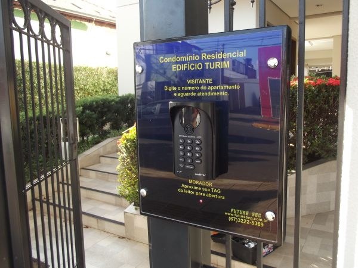
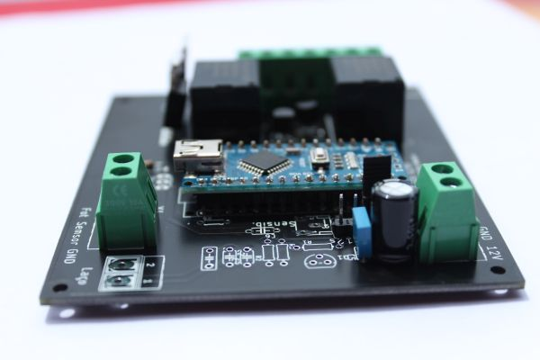
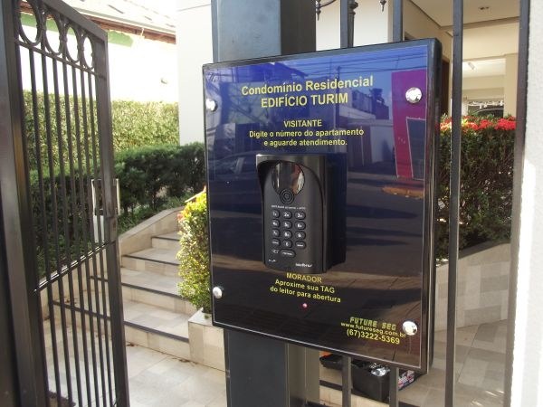
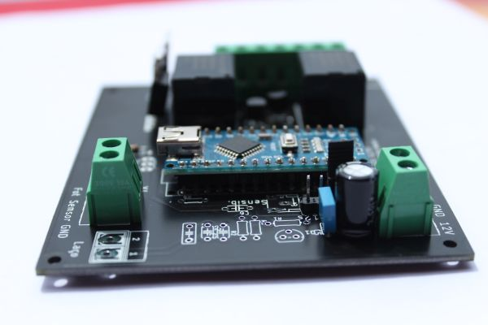
 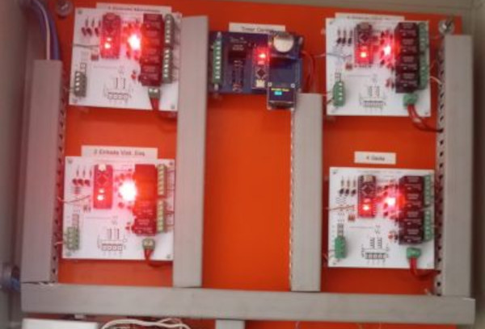
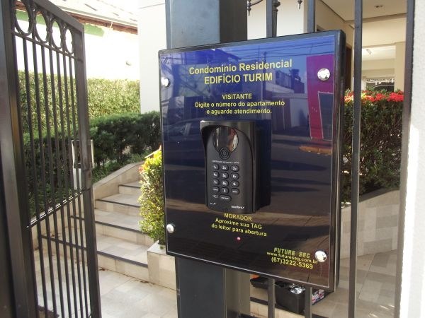
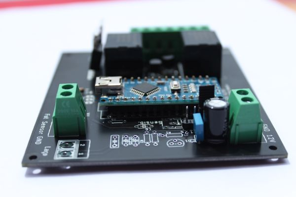
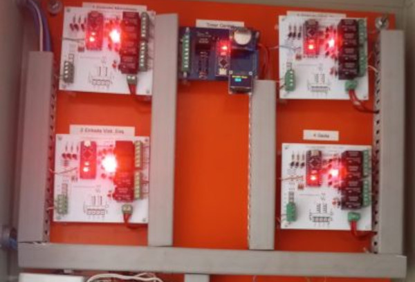
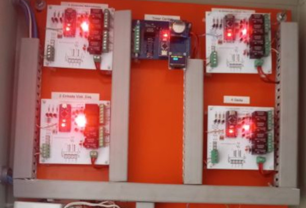
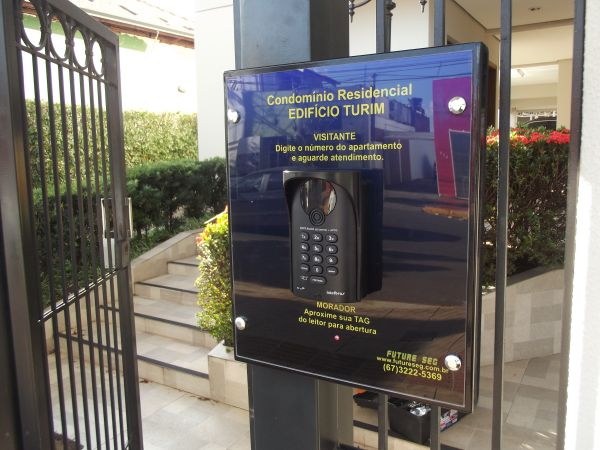
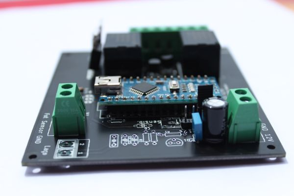
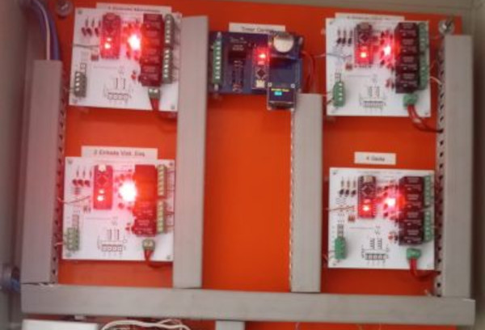
Sou Adercio B. Junior, técnico em eletrotécnica de formação. Trabalho atualmente no segmento de segurança eletrônica, com foco em controle de acesso, sistemas de CFTV IP e desenvolvimento de circuitos eletrônicos dedicados, gerenciados por microcontrolador.
Paralelamente ao trabalho, estou cursando presencialmente Técnico em Desenvolvimento de Sistemas no Senac Hub Academy e Engenharia de Software na modalidade EAD na Faculdade Estácio de Sá.
Possuo vasta experiência em sistemas de segurança eletrônica em geral, incluindo alarmes, interfonia GSM, proteção perimetral de ambientes e CFTV de alta definição
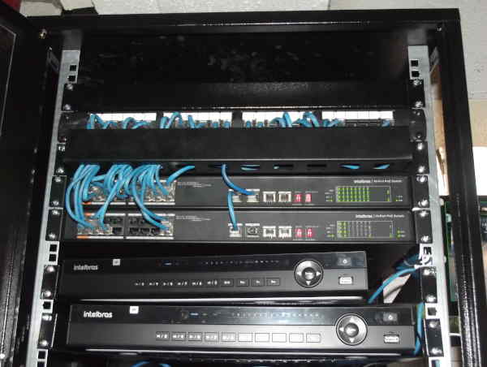